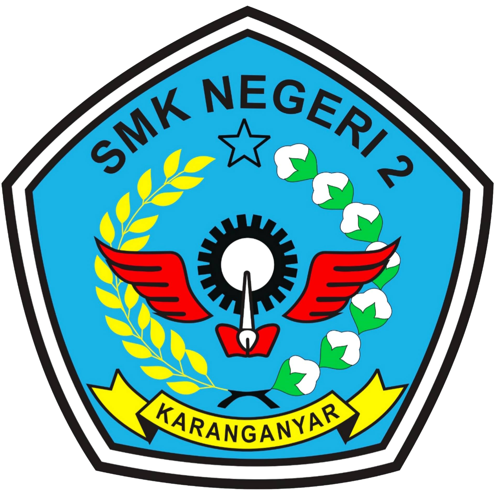
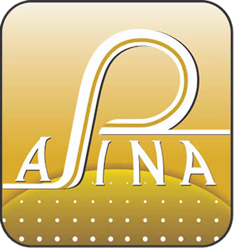

Ahmat Zainul Muttaqin
Starting from his interest in technology, he started his education at SMK 2 Karanganyar majoring in technical engineering. When studying technical engineering in vocational high school, he has won the CADD (Computer Aided Design and Drawing) in 2nd place. After graduating from vocational high school, he continued his career to Japan, as a trainee in metal foundry company called Sugiyama Co.,Ltd based in Yamanashi. With his live experience and what he learned in Japan, transform his mindset to became long life learning. He decided to study informatics. Now he is studying at the Muhammadiyah Surakarta University for the 1st semester. Have many "spells" for keep dreaming, Man jadda wajada, Man shabara zhafira, Man saara ala darbi washala.
Biography
Ahmat Zainul Muttaqin was born on May 1, 1999
in Karanganyar Central Java, the first of three children.
Live in Karangpandan Karanganyar with his family.
Study & Experience
 | Contact Me
|
||
|---|---|---|
|
|
|
| 2014-2017 | 2021-Present | 2017-2020 | 2020-2021 |